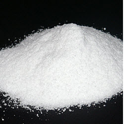

Salz
Salz ist ein beliebtes Mittel um sein Essen oder Suppe zu verbessern. Allerdings ist Salz in grösseren Mengen schädlich,
da es das Wasser zieht. Man kriegt also von zuviel Wasser Durst. Salz wird hauptsächlich abgebaut, da es vermehrt in
gewissen Steinen vorhanden ist. Allerdings kann man es auch aus Meerwasse gewinnen. Man kann Salz auch zur Konservierung
von Fleisch und Fisch verwenden. Dies verstärkt den geschmack und hält das Fleisch länger frisch. Salz ist für den menschlichen
Körper unerlässlich. Nicht nur für den Geschmack von Speisen und Gerichten – sondern auch aus gesundheitlichen Aspekten.4-6 Gramm
Kochsalz benötigt ein erwachsener Mensch pro Tag. Diese Menge nimmt er bei einer ausgewogenen Ernährung automatisch zu sich. Durch
die Zugabe von Jod werden Mangelerscheinungen oder gar Erkrankungen vorgebeugt; der Zusatz von Fluor wirkt sich positiv auf unsere
Zähne aus und dient zur Kariesprophylaxe. Mit den Produktlinien JuraSel, die in der Region Basel in Schweizerhalle gefördert und
produziert werden und dem Sel des Alpes, das in Bex gewonnen wird, verfügen wir über ein umfassendes Angebot an echten Schweizer Speisesalzen.

Salz kann man in folgenden sorten kaufen:
- weisses Speisesalz
- rotes Speisesalz
- Tafelsalz
- Meersalz
Es gäbe auch noch diverse Gewürzmischungen, welche auf Salz basieren.
Dirk Salz
Nicht anders als zu Zeiten der klassischen Kunsttheorie geht die Zeichnung bei zahllosen Künstlern auch heute
noch den Werken anderer Gattungen voraus. Ein Großteil an Gemälden, Installationen, Skulpturen, zum Teil sogar
Videoarbeiten und Performances, gar nicht zu reden von Design und Architektur, wird in Entwurf und Planung ganz
wesentlich auf zeichnerische Verfahren gegründet. In den relevanten theoretischen Grundlegungen der Kunst der
Neuzeit galt der disegno aus diesem Grund als „Vater der Künste“, da der zeichnerische Entwurf unmittelbar auf
die erste Idee des Künstlers, die Konzeption – gleichermaßen Plan und „Empfängnis“ – des Kunstwerks bezogen ist.
In der Zeichnung, so die Begründung, zeige sich die geistige Vorstellungskraft des Künstlers und damit der
kreative Kern seiner Arbeit direkter und reiner als in jeder anderen Kunstgattung. Ganz in diesem Sinn sind
für eine Vielzahl von Künstlern noch immer Zeichenstift und Skizzenbuch (oder ihre digitale Ersetzung durch
den Computer) die wichtigsten Utensilien ihrer Ideenwerkstatt, noch immer dient die Ausarbeitung von
zeichnerischen Vorstudien ganz selbstverständlich der konzeptionellen Klärung von malerischen oder im weitesten
Sinne skulpturalen Projekten.
In der Arbeit von Dirk Salz jedoch ist es genau umgekehrt. Seine umfangreiche Reihe von Zeichnungen hat sich
als Idee zunächst aus seiner Malerei heraus entwickelt; ihre grundlegenden Impulse beziehen sie aus den
Erfahrungen mit rein malerischen Prozessen und Fragestellungen (wobei das Wort „malerisch“ in Anführungszeichen
zu setzen ist, da die prozesshafte Art des Umgangs mit Farbe bei Salz wenig mit der traditionellen Vorstellung
von Malerei als Pinselarbeit zu tun hat). Von 2003 an erkundete Dirk Salz die künstlerischen Möglichkeiten, die
sich aus dem flächigen Farbauftrag mit Rakeln und Spachteln ergaben. Dieses halbmechanische Verfahren erlaubte
es ihm, den Vorgang des Malens als einen offenen Prozess aus der Dialektik von Kontrolle und Zufall zu betreiben.
Aus dieser Malweise heraus ergaben sich in seinen Bildern mindestens zwei Arten von im weitesten Sinne
grafischen oder zeichnerischen Strukturen. Zum einen lineare Verläufe, die aus dem Ansetzen und Abheben
der Rakel resultierten; zum anderen innerhalb der Binnenflächen der Farbsubstanz auftretende unvorhersehbare,
scharf konturierte oder auch weich verlaufende Formbegrenzungen, „Umriss“-Linien amorpher Felder, die an den
Stellen entstanden, an denen die obere Schicht des Farbmaterials „abriss“ und darunter befindliche Farblagen
sichtbar wurden. Das Auftauchen geplanter und zufälliger, sich aus dem Material und dem Malprozess ergebender
grafischer Strukturen legten den Gedanken nahe, das in der Malerei angewandte Prinzip des „kontrollierten Zufalls“
auch in einem grafischen Medium, mit rein zeichnerischen Mitteln zu erproben. Die Lösung fand sich
überraschenderweise in ihrer vertrautesten und klassischsten Form: als Zeichnung mit Bleistift auf Papier.
Das technische Prozedere und das formale Grundschema dieser seit 2007 entstehenden Zeichnungen sind schnell
beschrieben: Dirk Salz zieht horizontale Linien auf kleinformatigen, meist hochrechteckigen, manchmal
quadratischen Zeichenpapieren. Zur Linienführung dient ihm nicht etwa ein handelsübliches Lineal, sondern
ein Stück Karton mit ungleichmäßig ausgefranstem Rand. Wegen dieser Unregelmäßigkeiten „springt“ der
Bleistift an manchen Stellen und lässt Lücken im Strich. Diese Prozedur des Linienziehens wiederholt sich
nun vielfach. Durch den mechanischen Druck beim Vorbeistreichen mit dem Bleistift verändert sich der
Kartonrand allmählich und damit auch die Verlaufsform und die Leerstellen der Linien. Mit der Veränderung
des Drucks und damit der Strichstärke, der Variation der Abstände zwischen den einzelnen Linien und der
Versetzung des Hilfskartons nach links oder rechts sind bewusste Gestaltungsmöglichkeiten gegeben.